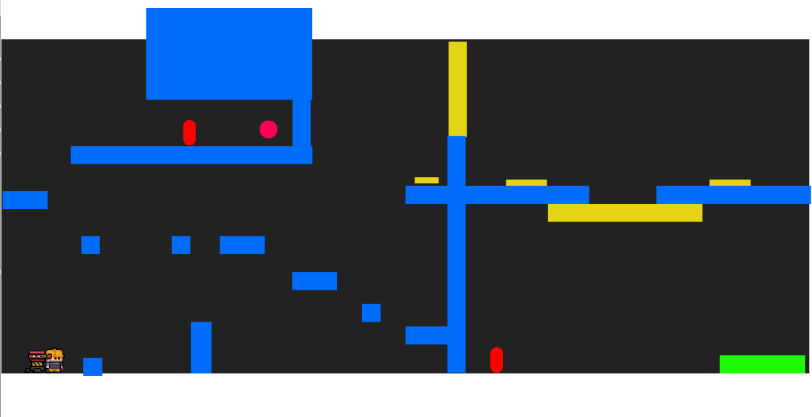
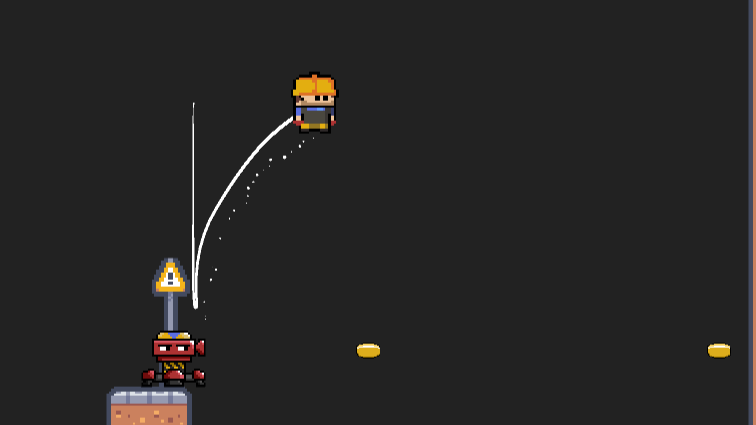

What is Nuts & Bolty?
Nuts & Bolty is a cartoony pixel-art puzzle 2D platformer in which players control a brave engineer, named “Nuts'', who can move, transport, and place an automatic turret named “Bolty”, that can: shoot at enemies, be used as a springboard, and activate mechanisms with its weight.
Players will traverse challenging puzzle levels to solve in a new fashion together with their beloved companion!
DOWNLOAD THE GAME
GAMEPLAY TRAILER
Solo Developer process
Followed the entire development process from Ideation to a Vertical Slice.
Ideation Phase:
- After receiving the brief, I developed some ideas using ideation strategies like SCAMPER.
- I defined a set of design goals and used those goals to move the development in a solid unified direction.
- Evaluated the scope of systems to code and art required to succesfully achieve a final Vertical Slice in the available time.
- Produced various Pitch Documents to pitch the idea to stakeholders.
- After pitching different ideas I picked the one that resonated most with stakeholders and started the Prototyping Phase.
Prototype Phase:

- Made all game systems' scripts using C#.
- Realized a level to incorporate all functionalities to test resulting in a functionality testing rather than gameplay testing.
- Organized various test rounds with end users to collect feedback to design and develop the game based on players’ feedback as much as possible.
- Systems bugfixing through tests and player's feedback.
- Wrote documentation to keep track of feedbacks and bugs.
- Created main characters sprites using Aseprite.
Vertical Slice:

- Designed puzzle levels from scratch in Unity to delineate a game progression through gradual mechanics introductions.
- Each level introduces a mechanic for the player to grasp and understand or increase the complexity of previous levels
- Created maps and environment using Tilemaps in Unity and finalized enemies and mechanisms sprites.
- Scripted an AudioManager to manage music and audio in the game with C#.
- Created menus scripts with C#.
Documentation:
- Pitch Document - Blockout, Writing and Presentation.
- Puzzle Design Process.
- Testing, Bugs and Feedback analyses.
Documents:
For more infos about the process please read the "Puzzle Design process" document
Nuts & Bolty Pitch
Puzzle platformer with a unique mechanic.
Read pitch
Approachable Puzzle Design
In depth process on how to create approachable puzzle design thanks to player feedback.
Read document